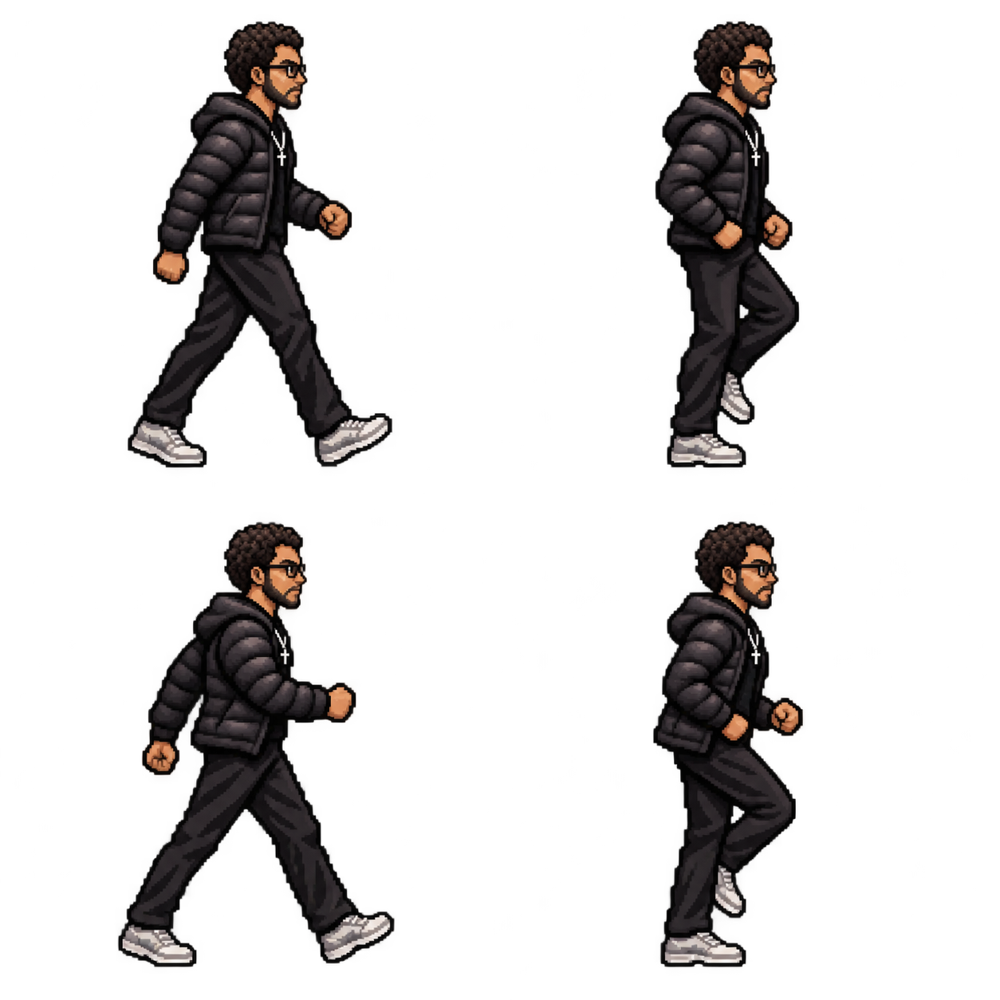
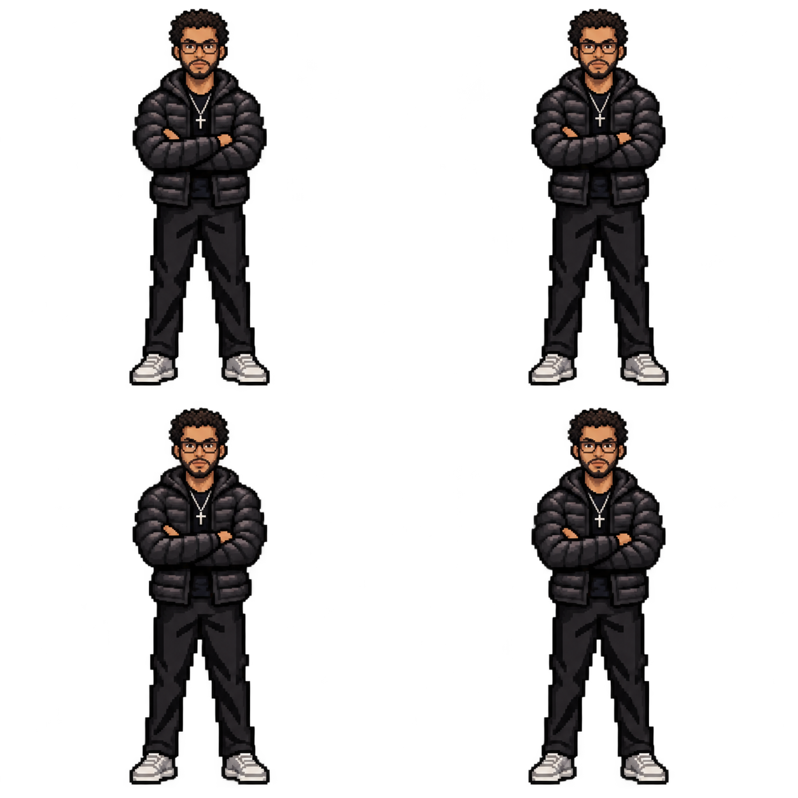

BOXING QUIZ ARCADE · PRÉVIA DE ARTE
Subida do professor
Oito poses para aprovação. Use os controles para comparar braços, pernas e tronco.
Carregando os PNGs…
Espaço: reproduzir/pausar · ← e →: avançar um quadro · clicar nas miniaturas: selecionar e pausar.
QUADRO 1 / 8
Abrir PNG originalComparar as poses
Sprites aprovados usados como referência

